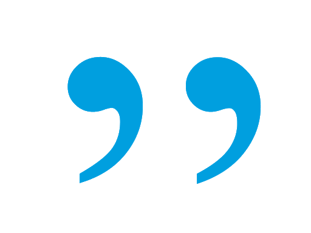

WashOnWheelsNYC is an on demand laundry service that offers same day contactless collection and delivery. Customers can schedule suitable time slots via our website or mobile app and the whole process only takes up to a few minutes. We partner with local laundromats in order to provide quick and convenient service while supporting the local communities. At WashOnWheelsNYC your health is of the utmost importance especially in today's environment. Our service provides a quick and easy solution to a time consuming and tedious process while eliminating the risk of infection.
Technology Architect and Backend Developer
Requirements gathering/analysis, allocation and direction of resources, system design, implementation & integration, software and firmware programming, product development, applications development
Front-end Developer
I am a senior at Baruch College majoring Computer Information Systems in General track and minoring Graphic communication. I am proficient in Python, C++, HTML and CSS which will be simultaneously for UI/US part of this project.
DevOps Engineer and QA
Hi, I am currently a senior in Baruch majoring in Computer Information Systems and minoring Psychology. I have experience coding in Python, C++, and Java. In my free time i enjoy reading and working out.